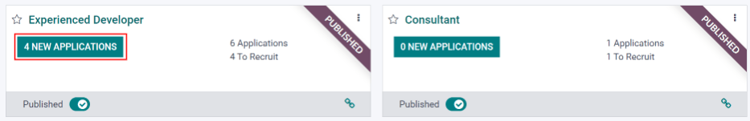
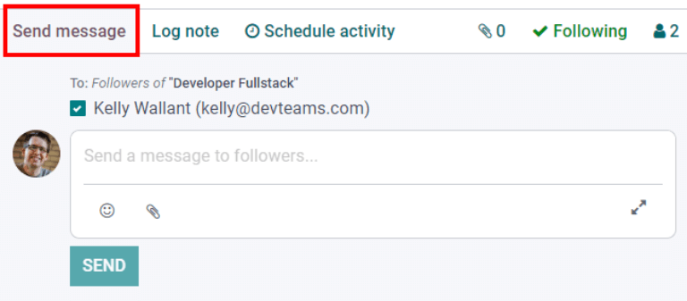
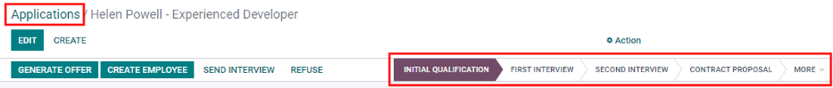
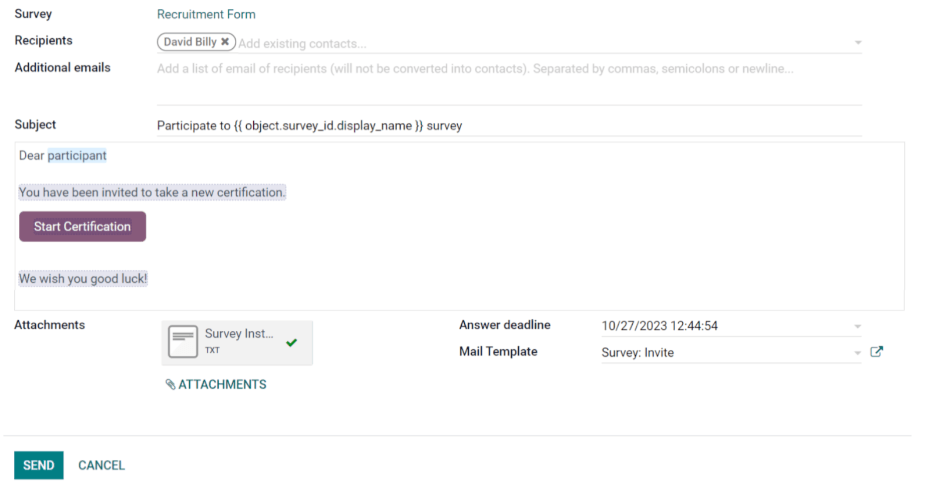
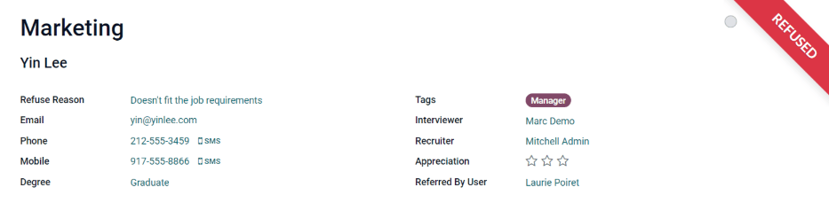
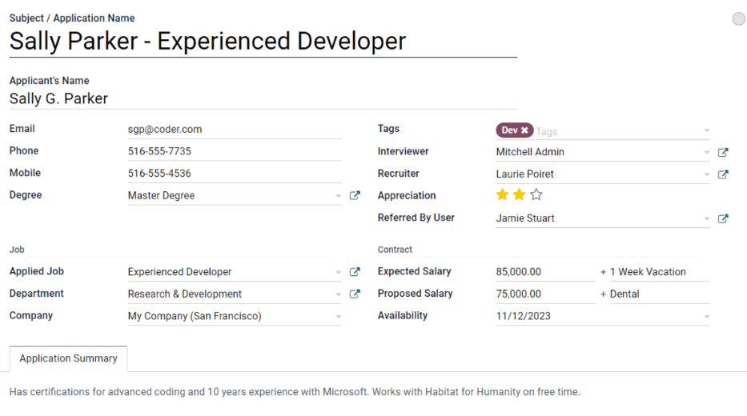
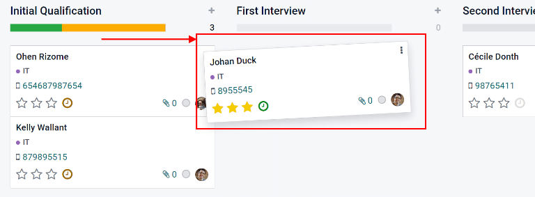
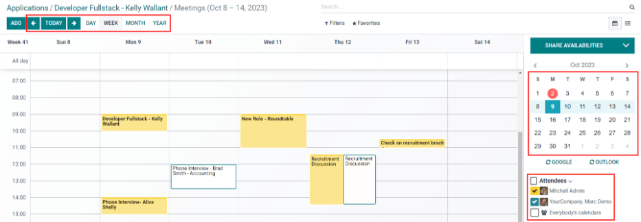
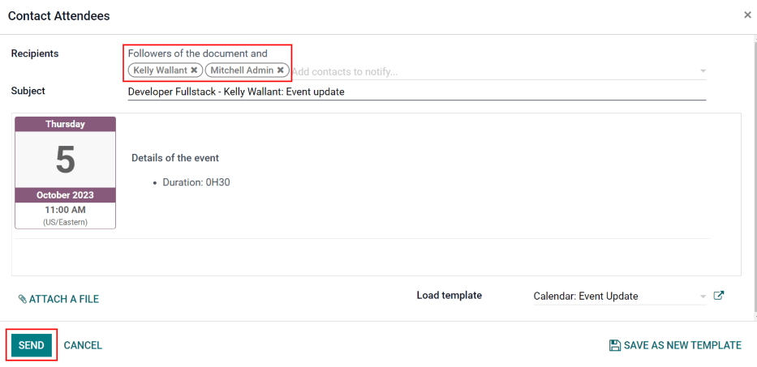
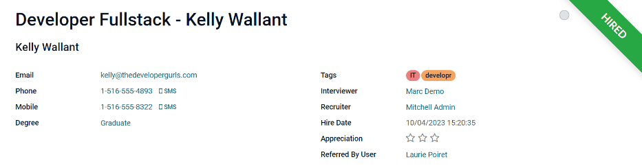

Recruitment¶
Odoo keeps all job applicants organized with a pre-configured series of steps and stages that each applicant goes through. Each stage has a specific step(s) that should be performed. These range from scheduling a phone call, conducting an interview, to sending a job offer, just to name a few. This process is referred to as the ‘applicant flow’.
When an applicant applies for a job position, an applicant card is automatically created in Odoo’s Recruitment app for that specific job position. As the applicant progresses through the recruitment pipeline, the recruitment team moves their card from one stage to the next.
Stages can be configured so that an email is automatically sent out using a set, pre-configured template as soon as an applicant’s card enters a stage. These automated emails are defined on each stage in the applicant flow.
The applicant flow explained in this document is the default flow in Odoo, and goes through the applicant flow when using the Recruitment application’s default configuration. The applicant flow is able to be modified to suit the specific recruitment flow for any business.
Note
The applicant flow with all its stages are universal and applies to all job positions, unless specified. A specific stage can be configured to be job-specific, meaning that specific stage is only visible for that specific job position. Otherwise, if a new stage is created, or an existing stage is modified, those changes will be visible on all job positions.
Kanban view¶
To access the kanban view for a job position, navigate to the main dashboard, which is the default view when opening the application. All job positions appear on the main dashboard. Click the New Applications smart button on a job position card to navigate to the kanban view for all the applicants for that particular job position.
Inside the job application, the kanban stages appear, with all the applicants populated in their respective columns, indicating what stage they are currently in. There are five default stages in Odoo:
The last column, Contract Signed, is folded by default, meaning that the column appears in gray and the applicants in it are hidden from view. To expand the folded stage and view the applicant cards for that column, click anywhere on the thin gray column that says the stage name and the column expands, revealing the applicants.

Each stage has a color-coded bar beneath the stage name, giving information about the applicant’s status in the stage. The colors are:
Green: there are applicants in the stage with an activity that is either already scheduled or needs to be scheduled in the future (such as a phone call or interview), according to the parameters for that particular stage.
Yellow: there are applicants in the stage with an activity either scheduled for today or due to be scheduled today.
Red: there are applicants in the stage with overdue activities which need to be scheduled.
Gray: there are either no activities currently scheduled and no future activities that are required to be scheduled, or there are no applicants currently in the stage.
Customize stages¶
Stages can be modified, added, or deleted to best meet the needs of the particular hiring steps of a business.
New stage¶
To create a new stage, click on + Add a Column and a new column appears. Enter the title for the new stage in the Column title field, then click Add. The new column appears, and another new stage is available to create. If no new stages are needed, click anywhere on the screen to exit the new column creation.

Modify stage¶
To modify the settings of a stage, hover over the name of the stage, and a ⚙️ (gear) icon appears in the upper right hand side of the stage. Click on the ⚙️ (gear) icon and a menu appears. Then click on the Edit Stage option. An Edit Column form appears. Make any modifications to the form, then click Save when done.

Edit column form¶
The Edit Column form is where the stage’s settings are configured. The only required fields are the Stage Name, and the Tooltips section.
The fields to be populated or modified are:
Stage Name: type in a name for the stage.
Email Template: select an email template to be used from the drop-down menu. If a template is selected, when the applicant card enters the stage, an email will automatically be sent to the applicant using the selected template.
Folded in Kanban: check the box to have the stage appear folded (hidden) at all times in the default view.
Hired Stage: check the box if this stage indicates that the applicant is hired. When an applicant’s card enters this stage, the card displays a Hired banner in the upper right corner. If this box is checked, this stage is used to determine the hire date of an applicant.
Job Specific: if the stage only applies to a specific job position(s), select the job position(s) from the drop-down menu. Multiple job positions can be selected.
Show in Referrals: check the box if this stage should be seen in the Referrals application, and allow the referrer to accrue points when a referral of theirs reaches this stage. If this is active, a Points field appears. Enter the amount of referral points the employee receives when an applicant enters this stage.
Tooltips section: there are three pre-configured labels (colored circles) for each applicant’s card, indicating its status. These colors are displayed at the top of each stage to reflect the statuses of the applicants in the stage. The names for the label can be modified, but the label itself (the color) cannot. The default names and labels are: In Progress (gray), Blocked (red), and Ready for Next Stage (green).
Requirements: enter any internal notes for this stage explaining any requirements of the stage.
Delete stage¶
If a stage is no longer needed, the stage can be deleted. To delete a stage, hover over the name of the stage, and a ⚙️ (gear) icon appears. First, click on the ⚙️ (gear) icon to reveal a drop-down menu, then click Delete. A pop-up warning appears, asking Are you sure you want to remove this column?. Click OK to delete the column.
Important
If there are applicants currently in the stage being deleted, an error pops up when attempting to delete the stage, explaining that there are records in the stage which need to be deleted, archived, or moved to a different stage before deleting.
Email templates¶
To communicate with the applicant, Odoo has several pre-configured email templates that can be used. The pre-configured email templates and when to use them are as follows:
Applicant: Acknowledgement: this template is used to let the applicant know that their application was received. This email is automatically sent out once the applicant is in the First Interview stage.
Applicant: Interest: this template is used to let the applicant know that they have passed the Initial Qualification stage and they will be contacted to set up an interview with the recruiter.
Applicant: Not interested anymore: this template is used when an applicant communicates that they are no longer interested in the position, and thanks them for their time and consideration.
Applicant: Refuse: this template is used when an applicant is no longer being considered for the position.
Applicant: Your Salary Package: this template is used when offering an applicant a position. This informs the applicant they can configure their salary package.
Note
Email templates can be created, modified, and deleted to suit the needs of a business. For more information on email templates, refer to the Email templates document.
To manually send an email click Send message in the chatter. A text box appears, as well as the applicant’s email address. Click the ⤢ (double arrow) full composer icon in the bottom right corner of the Send Message tab in the chatter.
An email composer pop-up loads, with the Recipients and Subject
pre-populated. The applicant’s email address is entered on the Recipients line, and the
Subject is Re: (Subject / Application Name). The email body is empty by default.
To use a pre-configured email template, click the drop-down next to the Load template field in the lower right section of the window. Pre-configured email templates may contain dynamic placeholders so unique information can be populated in the email for a more personalized message to the applicant. There are several pre-configured email templates to choose from. Depending on the template selected, the email subject and/or body may change.
Note
Only the email templates that are configured for the model will load. There are other email templates pre-configured in Odoo, but if they are not configured for the recruitment application, they will not appear in the list of available templates.
If any attachments are to be added, click the Attach A File button in the lower left corner. Navigate to the file to be attached, then click Open to attach it. To delete an attachment, click the X (Delete) icon to the right of the attachment. If any changes need to be made to the email, edit the body of the email. If the edits should be saved to be used in the future, the email can be saved as a new template. Click the Save As New Template button in the bottom right corner. To send the email, click Send and the email will be sent to the applicant. The email then appears in the chatter.
Stage flow¶
In order to move an applicant’s card from one stage to another, the applicant’s card can either be dragged and dropped in the kanban view to the desired stage, or the stage can be modified on the applicant’s card.
To change the stage on the applicant’s card, click on the applicant’s card in the kanban view to go to a detailed view of the card. The current stage for the card is highlighted in purple at the top, above the card. Simply click the desired stage for the card, and the stage changes. A log note indicating the stage change appears in the chatter. Navigate back to the kanban view by clicking on Applications in the breadcrumb menu in the top left, and the applicant’s card now appears in the new stage.
Initial qualification¶
Important
The following information is based on Odoo’s default recruitment pipeline flow. Be advised that if modifications are made to create a customized recruitment pipeline flow, it will vary from the following information.
All applicants appear in the Initial Qualification stage, whether submitted online or if the applicant is manually entered by a recruiter. When the applicant’s card is created, Odoo automatically populates the applicant’s Name, Email address, and Phone number on the applicant’s card. This information is required when applying for a job position.
If the applicant entered any information in the Short Introduction section of the online application, it is populated in the Application Summary tab at the bottom of the applicant’s card. If a resumé was attached to the online application, the resumé appears in the attachments section of the chatter, and is also stored in the Documents application. To find the recruitment documents stored in the Documents application, navigate to the main dashboard, and click the folder labeled Recruitment on the right side. All recruitment documents will be stored within that folder.
Send interview¶
At any point in the hiring process, an interview can be sent to the applicant to obtain more information. These interviews are custom-made, and can be formatted in a variety of ways.
Odoo uses the term interview, but these can be thought of as questionnaires, surveys, tests, certifications, etc. Custom interviews can be formatted to suit each individual job position’s needs. For example, a job position for a computer programmer could have an interview in the form of a programming quiz to determine the skill level of the applicant. A job position for a restaurant server could have a questionnaire inquiring about the applicant’s availability, if the desired applicant needs to be available on weekend evenings. For more information on creating and editing interview forms, refer to the Job positions documentation.
Note
In order to send an email to an applicant, there must be an email address on the applicant’s card. If an email address is not entered on the applicant’s card, when Send Interview is clicked, the applicant’s card appears instead of the Survey pop-up window. Enter the email address in the email field, then click Save. Once the applicant’s card is saved, the applicant’s card closes and the Survey pop-up window appears.
To send an interview to an applicant, click on an applicant’s card to navigate to a detailed view of the applicant’s card. At the top of the applicant’s card, click the button labeled Send Interview.
If the applicant’s card has an email address on file, a Survey pop-up window appears, with all the information populated. If an email is not on the applicant’s card, then a contact form appears. Enter the applicants email address, then click Save. The card closes and the Survey pop-up window appears.
Odoo refers to the interview forms as surveys. These email templates also use dynamic placeholders to personalize the email to the applicant and the job position. Add any additional recipients for the survey if more people should receive the email. If an email is in the database as a contact, add that contact on the Recipients line. If an email should be sent to someone who is not in the database as a contact, and they should not be added as a contact, add their email to the Additional emails line.
If any attachments need to be added, click the Attachments button and a file explorer window appears. Navigate to the desired file, then click Open to attach it to the email. The attachment loads, and is listed above the Attachments button.
If the emailed interview must be completed by a specific date, select a date for the Answer deadline in the lower-right area of the pop-up window. Click on the line next to Answer deadline, and a calendar selector appears. Use the < (left) and > (right) arrows on either side of the month to navigate to the desired month, then click on the day to select the date.
The Mail template field is pre-populated based on the configuration for the interview. A different template can be chosen from the drop-down menu if desired. If a new template is selected, the new email template loads in the email body.
To send the email with the interview link to the applicant, click Send at the bottom of the email pop-up.
Refuse¶
At any point in the recruitment pipeline, an applicant can be refused from the job application process. To refuse an applicant, click on an applicant’s card to navigate to a detailed view of the applicant’s card. At the top of the applicant’s card, there are several buttons. Click the one labeled Refuse.
A Refuse Reason pop-up appears. Select the Refuse Reason from the drop-down menu. The default refuse reasons in Odoo are: Doesn’t fit the job requirements, The applicant is not interested anymore, and The applicant gets a better offer. These three refusal reasons have pre-configured email templates associated with them. Additional refusal reasons can be created and existing ones can be modified or deleted. To add a new refusal reason, type in the name of the reason, then click Create and Edit…. A Create: Refuse Reason pop-up window appears. Type in the name of the new email template in the Email Template field, and click Create and Edit…. A Create: Email Template window loads. Configure the new email template, then click Save.
Note
Pre-configured email templates in Odoo sometimes use dynamic placeholders, which are customized pieces of data that populate dynamic content. For example, if the applicant’s name is a piece of dynamic content, the applicant’s name will appear anytime that dynamic placeholder appears on the email template. For more detailed information on email templates, refer to the Email templates documentation.
An email template populates the Email Template field after a refusal reason is selected. If an email should not be sent to the applicant, uncheck the Send Email checkbox. To view the email template, click the External Link icon to the right of the email template selected. The email template loads in the pop-up window, and can be modified if needed. After making modifications, click Save. To close the email template, click Discard.
To send the refusal email to the applicant, click Send. The refusal email is sent to the applicant, and a Refused banner appears on the applicant’s card.
After refusal, the applicant’s card is no longer visible in the job position’s kanban view. To view refused applicants, navigate to the . All applications for all job positions are presented in a list view. To view the refused applicants only, click Filters, then click Archived/Refused. All applicants that have been archived and/or refused appear in the list. To further organize this list and view refusals by job position, click ≣ Group By, then click Job.
New applicant¶
An applicant card can be manually added if needed. If an applicant needs to be added to the list of prospective candidates and an applicant card has not been created yet (they have not applied for the job online yet) an applicant card can be easily added from the job position kanban view in one of two ways, using either the Quick add icon or the Create button.
Quick add¶
Quickly add a new applicant using the Quick add icon. If not already in the job position kanban view, navigate to the main recruitment dashboard, and click the New Applicants button on the job position card that the applicant should be added to. Then, click on the small + (plus sign) Quick add icon in the top right of the Initial Qualification stage to quickly add a new applicant.

Enter the following information on the card:
Subject/Application Name: this is the only required field. Enter the title for the card. Typically this is the applicant’s name and job position being applied to, for example:
Laura Smith - Experienced Developer. This field is not visible in the kanban view (unless in the Developer mode), but is visible on the individual card.Applicant’s Name: enter the applicant’s name.
Email: enter the applicant’s email address.
Applied Job: the current job position populates this field. If needed, the job position can be changed by selecting a different position from the drop-down menu. If a different job position is selected, after the card is created, the card will appear in the selected job position.
After the information is entered, click Add. The applicant appears in the list, and a new blank applicant card appears. Click either the 🗑️ (delete) icon or click anywhere on the screen to close the card.
If preferred, after entering the applicant name, click Edit and a detailed Applicant Form loads. Enter the information on the form, then click Save
Create¶
Add a new applicant including all the relevant information using the Create button. If not already in the kanban view for the job position to add an applicant to, navigate to the main recruitment dashboard, and click the New Applicants button on the job position card that the applicant should be added to. Then, click the Create button in the top left of the kanban view and an applicant form loads.
Certain fields on the applicant card may be pre-populated, depending on how the job position is configured. Typically, the Job section, as well as the Recruiter field, are all pre-populated.
Enter the following information on the new applicant form. Note that not all fields listed below may be visible. Depending on installed applications and configurations, some fields may not be displayed.
Applicant section¶
Subject/Application Name: this is the only required field. Enter the title for the card. Typically this is the applicant’s name and job position being applied to, for example:
Laura Smith - Experienced Developer. This field is not visible in the kanban view, unless the Applicant’s Name is left blank. If there is no Applicant’s Name, then the Subject/Application Name is what is displayed on the applicant card in the kanban view.Applicant’s Name: enter the applicant’s name.
Email: enter the applicant’s email address.
Phone: enter the applicant’s phone number.
Mobile: enter the applicant’s mobile number.
Degree: select the applicant’s highest level of education earned from the drop-down menu. Options are Graduate, Bachelor Degree, Master Degree, or Doctoral Degree. The Graduate option indicates graduating the highest level of school before a Bachelor’s degree, such as a high school or secondary school diploma, depending on the country.
Tags: select as many tags as desired from the drop-down menu. To add a tag that does not exist, type in the tag name, the click Create “new tag”.
Interviewer: select the person who will be conducting the interview(s) from the drop-down menu. The person must have either recruiter or officer rights configured for the Recruitment application in order to appear on the drop-down.
Recruiter: select the person responsible for the entire recruitment process for the job position. Only users can be selected, and all users are presented in the drop-down to select from.
Appreciation: click on one of the stars to select a rating for the applicant. One star indicates Good, two stars indicates Very Good, and three stars indicates Excellent.
Referred By User: if referral points are to be earned for this job position in the Referrals application, select the user who referred the applicant from the drop-down menu. The Referrals application must be installed for this to appear.
Job section¶
The following fields are pre-populated when creating a new applicant, as long as these field are specified on the Job Position. Editing the fields is possible, if desired.
Applied Job: select the job position the applicant is applying to from the drop-down menu.
Department: select the department the job position falls under from the drop-down menu.
Company: select the company the job positions is for using the drop-down menu.
Contract section¶
Expected Salary: enter the amount the applicant is requesting for the role in this field. The number should be in a
XX,XXX.XXformat. The currency is determined by the localization setting for the company.Expected Salary - Extra advantages…: if any extra advantages are requested by the applicant, enter it in this field. This should be short and descriptive, such as
1 week extra vacationordental plan.Proposed Salary: enter the amount to be offered to the applicant for the role in this field. The number should be in a
XX,XXX.XXformat.Proposed Salary - Extra advantages…: if any extra advantages are offered to the applicant, enter it in this field. This should be short and descriptive, such as
1 week extra vacationordental plan.Availability: using the calendar module in the drop-down menu, select the available start date for the applicant.
Application summary tab¶
Any additional details or notes that should be added to the applicant’s card can be typed into this field.
First interview¶
After an applicant has passed the Initial Qualification stage, they can be moved to the First Interview stage in the job position kanban view. To move the applicant to the next stage, drag and drop the applicant’s card to the First Interview stage, or click on the First Interview stage button at the top of the individual applicant’s card.
When the applicant’s card moves to the First Interview stage, an acknowledgement email is automatically sent to the applicant. The email is created using an email template titled Applicant: Acknowledgement. This email template is pre-configured in Odoo, and contains dynamic placeholders for the job position, the recruiter’s name, and the company’s information. Once the email is sent, the email appears in the chatter.
Schedule a meeting¶
When a date and time have been agreed upon for both the applicant and interviewer, the interview can be scheduled. To schedule an interview, whether a phone or in-person interview, click the Meeting smart button at the top of the applicant’s record.
The applicant’s card can be found by navigating to the dashboard, click on a New Applications button in the job position card, then click on the applicant’s card.
Note
The meeting smart button will display No Meeting if no meetings are currently scheduled. For new applicants who are new to the First Interview stage, this will be the default. If there are any meetings already scheduled, the smart button will display Next Meeting with the date of the upcoming meeting.
Doing so loads the Calendar application, showing the currently scheduled meetings and events for the user. The meetings and events displayed are for the employees who are listed under the Attendees section on the right side of the calendar view. To change the currently loaded meetings and events being displayed, uncheck the person who’s calendar events are to be hidden. Only the checked attendees will be visible on the calendar.
The default view is the week view. To change the calendar view, click on a button to present the calendar in a different view, either Day, Month, or Year. To change the displayed date range for the calendar, either use the ⬅️ (Left), ➡️ (Right), or Today buttons above the calendar, or click on a date in the calendar on the right side of the displayed calendar.
To add a meeting to the calendar, click on the day the meeting is to take place, or click on the start time of the meeting and drag to the end time, to select the date, time, and the length of the meeting. If the calendar is displaying the day or week view, click on the day and the time slot the meeting is to take place. A New Event pop up appears, with the Meeting Subject populated with the applicant card’s Subject/Application Name. The default time slot is 30 minutes. If the information is correct, click Create to add the meeting to the calendar, or click Edit to modify the meeting.
If Edit is clicked, an expanded New Event card loads. Make any changes needed to the form.
New event card¶
The fields available to populate or modify on the detailed New Event card are as follows. The only required fields to enter are the Meeting Subject, Starting At, and Ending At fields. Once the card details are entered, click Save to save the changes and create the meeting.
Meeting Subject: enter the subject for the meeting. This should clearly indicate the purpose of the meeting. The default subject is the Subject/Application Name on the applicant’s card.
Attendees: select the people who should be in attendance. The default employee listed is the person who is creating the meeting. Add as many other people as desired.
Meeting details tab¶
Starting At: using the drop-down calendar, select the date and time for the meeting start time.
Ending At: using the drop-down calendar, select the date and time for the meeting end time.
Duration: this field auto populates based on the Starting At and Ending At times entered. If the meeting time is adjusted, this field automatically adjusts to the correct duration length.
All Day: if the meeting is an all day long event, check the box next to All Day. After this box is checked, the Duration field is hidden from view, a well as the meeting start and end times.
Organizer: the employee who created the meeting is populated in this field. Use the drop-down menu to change the selected employee.
Description: enter a brief description in this field. There is an option to enter formatted text, such as numbered lists, headings, tables, as well as links, photos, and more. Use the powerbox feature, by typing a
/, and a list of options are presented. Scroll through the options and click on the desired item. The item appears in the field and can be modified. Each command presents a different pop-up window. Follow the instructions for each command to complete the entry.Reminders: select a reminder from the drop-down menu. Options include Notification, Email, and SMS Text Message, each with a specific time period before the event (hours, days, etc). The reminder chosen will alert the meeting participants of the meeting via the selected option.
Location: enter the location for the meeting.
Meeting URL: if the meeting is virtual, enter the meeting link in this field.
Tags: select any tag(s) for the meeting using the drop-down menu. There is no limit to the number of tags that can be used.
Options tab¶
Recurrent: if the meeting should repeat at a selected interval (not typical for a first interview), check the box next to Recurrent. This reveals a recurrence section. Enter the details for how often the meeting should repeat, including an end time.
Privacy: select the visibility of this meeting. Options are Public, Private, and Only internal users. Public allows for everyone to see the meeting, Private allows only the attendees listed on the meeting to see the meeting, and Only internal users allows anyone logged into the company database to see the meeting.
Show as: select from the drop-down whether the meeting time should appear as Busy or Available in the attendees’ schedules. Setting this field to Available allows other meetings to be scheduled for the same time. It is recommended to set this field to Busy, so no other meetings can be scheduled for the attendees at the same time.
Send meeting to attendees¶
Once changes have been entered and the meeting details are correct, the meeting can be sent to the attendees via email or text message.
To send the meeting via email, click the Email button next to the list of attendees. A Contact Attendees email configurator pop-up appears. A pre-formatted email using the default Calendar: Event Update email template populates the email body field. The followers of the document (job application), as well as the user who created the meeting are added as Recipients by default. Add the applicant’s email address to the list to send the email to the applicant as well. Make any other desired changes to the email. If an attachment is needed, click the Attach A File button, navigate to the file, then click Open. Once the email is ready to be sent, click Send.
To send the meeting via text message, click the SMS button next to the list of attendees. A Send SMS Text Message pop-up appears. At the top, in a blue box, information appears regarding the message. The first line lists how many records (phone numbers) are selected. The second line lists the number of recipients and how many of them are invalid. If a contact does not have a valid phone number listed, click Close, and edit the attendee’s record, then redo these steps.
Warning
It is not recommended to check the box to send to all the records in the Send SMS Text Message pop-up. This would send a message to all contacts with a valid phone number.
When the message reads 0 are invalid, type in the message to be sent in the Message field. Beneath the message field, the number of characters, as well as the amount of text messages required to send the message (according to GSM7 criteria) appears. Click Put In Queue to have the text sent later, after any other messages are scheduled, or click Send Now to send the message immediately.

Note
Sending text messages is not a default capability with Odoo. To send text messages, credits are required, which need to be purchased. For more information on IAP credits and plans, refer to the In-app purchases (IAP) documentation.
Second interview¶
After an applicant has passed the First Interview stage, they can be moved to the Second Interview stage. To move the applicant to the next stage, drag and drop the applicant’s card to the Second Interview stage, or click on the Second Interview stage button at the top of the individual applicant’s card.
When the applicant’s card moves to the Second Interview stage, there are no automatic activities or emails configured for this stage, unlike for the First Interview stage. The recruiter can now schedule a second interview with the applicant, following the same process as for the first interview.
Contract proposal¶
When the applicant has passed the interview stages and an offer is ready to be sent, they can be moved to the Contract Proposal stage. Drag and drop the applicant’s card to the Contract Proposal stage, or click on the Contract Proposal stage button at the top right of the individual applicant’s card.
The next step is to send an offer to the applicant. On the applicant’s card, click the
Generate Offer button. A Generate a Simulation Link pop-up appears. All
fields are pre-populated with information from the job position, except for the Force
New Cars List, Default Vehicle, and the Canteen Cost (this is set to
0.00).
Note
Not all fields may appear on the Generate a Simulation Link pop-up. Depending on the localization setting for the company and the applications installed, some fields may not appear. For example if the Fleet application is not installed, the fields related to vehicles will not appear on the pop-up.
Universal fields¶
The following fields appear for all offers sent to applicants regardless of localization settings.
Offer Template: the template currently being used to populate the Generate a Simulation Link pop-up. To modify the template, click the External link icon to the right of the drop-down arrow. Make any changes, then click Save.
Job Title: the name of the position being offered to the applicant.
Contract Start Date: the date the contract takes effect. The default date is the current date. To modify the date, click the drop-down to reveal a calendar. Use the < (left) and > (right) arrows on either side of the month to navigate to the desired month, then click on the day to select the date.
Yearly Cost: the annual salary being offered.
Offer Link: this link takes the applicant to a webpage where they can enter their personal information, which will be imported to their employee record when created. If applicable, the applicant can modify their salary package (this option is not available for all localizations). Lastly, this is where the applicant accepts the offer by clicking Review Contract & Sign to accept the contract and sign it using the Sign application.
Note
The Sign application must be installed in order for a document to be signed. Ensure the Sign application is installed to use this feature.
Optional fields¶
The following fields will only appear if specific localization settings are selected, and/or certain applications are installed. For example if the Fleet application is not installed, none of the optional fields related to vehicles will appear, such as Force New Cars List or Default Vehicle.
Job Position: the official title of the job being offered to the applicant, from the Job Position card. To modify the name, click the External link icon to the right of the drop-down arrow. Make any changes, then click Save.
Department: the department the job position falls under. To modify the department, click the External link icon to the right of the drop-down arrow. Make any changes, then click Save.
Force New Cars List: check this box to offer a new vehicle to the applicant.
Default Vehicle: using the drop-down menu, select the vehicle that will be assigned to the applicant.
Canteen Cost: enter the amount that is offered to the applicant for the cafeteria.
Contract Type: using the drop-down menu, select the type of contract that is being offered.

Send offer¶
To send the offer to the applicant, click Send. If the applicant does not have an email address listed on their applicant card, the applicant form appears so their email can be configured. If there is already an email configured on the applicant’s card, the email pop-up appears instead. If prompted with the applicant’s card, enter the applicant’s email address in the Email field, then click Save. The applicant form closes and the email pop-up appears.
The Applicant: Your Salary Package email template is used, and the Recipients, Subject, and email body are pre-populated based on the email template. If any attachments need to be added, click the Attachments button and a file explorer window appears. Navigate to the desired file, then click Open to attach it to the email. The attachment loads, and is listed above the Attachments button. Once the email is ready to send, click Send.
Note
To send an offer, ensure the Sign application is installed. This is necessary so the offer can be sent to the applicant by the recruiter. The applicant does not need any software installed.

Contract signed¶
Once the applicant has accepted the offer and signed the contract, the next step is to move the applicant to the Contract Signed stage. To move the applicant to the next stage, drag and drop the applicant’s card to the Contract Signed stage, or click the More button at the top of the applicant’s card to reveal the Contract Signed stage button at the top of the individual applicant’s card, and click Contract Signed.
The Contract Signed stage is folded in the kanban view, but the card may still be dragged and dropped into that stage.
Once the applicant’s card moves to the Contract Signed stage, a green Hired banner appears in the top right of the applicant’s card.
Create employee¶
Once the applicant has been hired, the next step is to create an employee record of them. On the applicant’s card, click the Create Employee button in the top left. An employee form appears, and any information from the applicant’s card that can be imported into the employee card appears in the form.
Fill out the rest of the form. For detailed information on the fields, refer to the Create a new employee documentation. When done, click Save. The employee record is now saved in the Employees app.